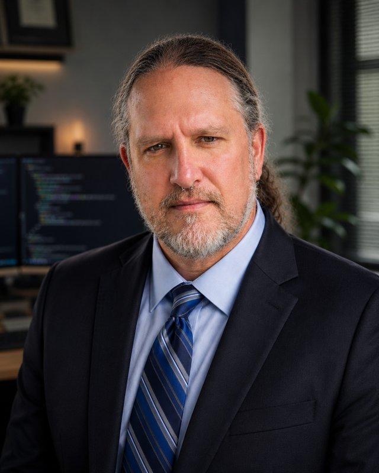

About Mark▋
Who I am, what I do, and where I'm headed.
"It always seems impossible until it's done."
— Nelson Mandela

AAS Computer Networking + AAS Cybersecurity
Hinds Community College — both in progress
CCNA + Linux+
Transfer to Mississippi State
Bachelor of Applied Science in Cybersecurity
Master's — AI / Machine Learning
I'm Mark Thompson, 46, autistic, a father of four and stepfather of two. The house is loud and I've learned to keep a still mind in the middle of it. The short version of me is a kid who had to know how things worked and never grew out of it. My dad put the tools in my hands early, Radio Shack electronics kits, a camera, the patience to stay with something until it made sense. I was fixing computers for people before I was old enough to drive, and no matter what my life turned into after that, that part never left. When something broke, it came to me, and I was the one who figured out why.
Years ago I tried to make that into a career. I enrolled in networking courses, and partway through I quit, convinced I wasn't capable of it. The truth is simpler and harder. I hadn't figured out yet how I learn, and I read that confusion as a limit instead of a gap. So I walked away from the one thing that had always been mine.
What followed was a long stretch of other work. Cooking was what I always came back to, because I was good at it and a kitchen will always hire. It started in my grandmother's kitchen and ran up into the high-end casino kitchens, and the part I lived for was go time, when it got slammed and there was no room left to fake anything. I tried to build something of my own with photography, the camera my dad gave me turned into a business shooting weddings and families, until a divorce ended it and the gear got sold. There was other work in between, none of it the plan. It all ran into the same wall. I put everything I have into whatever I'm doing, and I kept ending up next to people who didn't, and I could never make my peace with that.
Coming back to school was not a small decision, and I didn't make it for a paycheck. It meant walking back to the exact thing I'd quit on, at 46, and being honest that the first try failed because I gave up. What's different this time is that I know how I learn, and the hard parts don't send me running anymore. My kids are watching me do this. I want them to see a person start over late, scared, and finish it anyway.
Now I'm studying Computer Networking and Cybersecurity at Hinds Community College and doing PC repair part time while I go. This summer I'm getting fiber certified and sitting for Security+, and in January I transfer to Mississippi State for a Bachelor of Applied Science in Cybersecurity. I keep a home lab running and build things just to understand them, including this site, which I hand-coded without frameworks. The electronics came back around too. Those Radio Shack kits turned into teaching myself circuits, PCBs, and microcontrollers, and building toward drones. The plan from here is security work, and past that, machine learning and AI. I'm taking it in order on purpose, networking first, then security, then the harder things, because I'd rather understand how something works than fake my way through it. This time I'm not walking away from it. I'm building toward work that actually matters to me, and I've never been more sure of the direction.
Networking
Systems
Security
Code & Web
deliberately unclosed